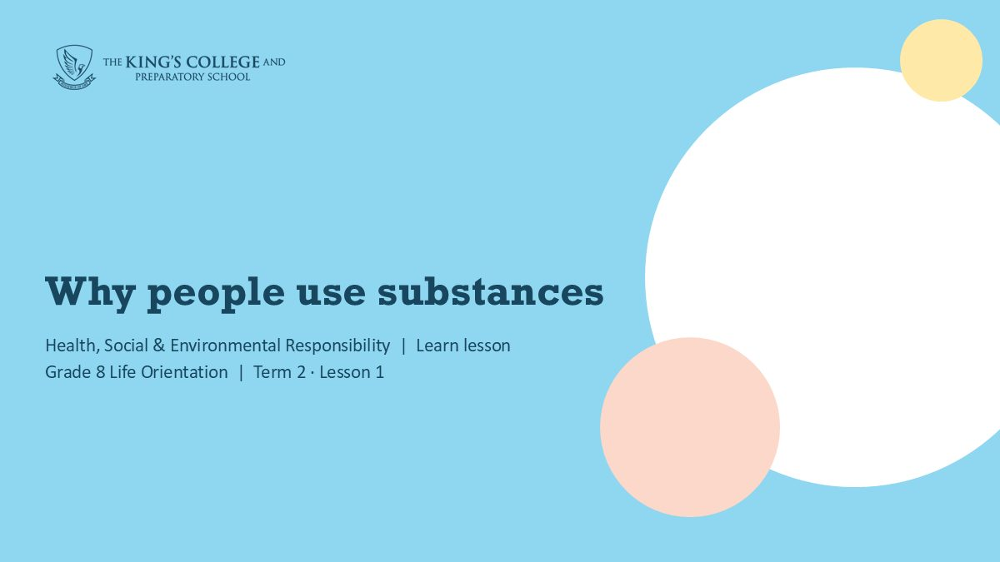

Term 2 · Lesson 1 · Learn lesson
Why people use substances
Start here
Today I will
- Name common substances, including vapes
- Explain why teenagers start using substances
- Describe the short- and long-term consequences
Why do you think a 13-year-old might try a vape for the first time?
Words to know
- Substance
- Anything you take into your body that changes how your body or mind works, such as alcohol, nicotine, dagga or medicine.
- Substance abuse
- Using a substance in a harmful way: too much, too often, for the wrong reason, or when it is illegal for you.
- Vape (e-cigarette)
- A device that heats a liquid, usually with nicotine and flavourings, into an aerosol that is breathed in.
- Tolerance
- When your body gets used to a substance, so you need more of it to feel the same effect.
- Addiction
- When you can't stop using a substance, even though it is harming you.
- Withdrawal
- Feeling sick, shaky, anxious or irritable when you stop using a substance you are addicted to.
Slides

Notes
Many teenagers are offered a vape, a drink or something stronger for the first time between the ages of 12 and 15, often by someone they know. Knowing the facts about substances, why people start using them and what they cost helps you to make a free and wise choice before the moment comes.
What is a substance?
A substance is anything you take into your body that changes how your body or mind works. Some substances are legal for adults (alcohol, cigarettes), some are medicines that are safe when used correctly, and some are illegal. Substance abuse means using a substance in a harmful way: too much, too often, for the wrong reason, or when it is illegal for you. For a teenager, any use of alcohol, nicotine or dagga is substance abuse, because the law and medical evidence both say these are harmful to people under 18.
Common substances
| Substance | What it is | Why it is harmful for teenagers |
|---|---|---|
| Alcohol | Beer, wine, ciders, spirits. Illegal to sell to anyone under 18 in SA. | Slows down the brain, leads to poor decisions, accidents and violence; harms the liver and the developing brain. |
| Nicotine: cigarettes, hubbly (hookah) and vapes | Nicotine is a highly addictive drug found in tobacco and in most vape liquids. | Very quickly addictive; damages the lungs and heart; vapes also contain chemicals and tiny metal particles. |
| Dagga (cannabis) | Adults may use it in private in SA, but it is illegal for under-18s. | Harms memory, concentration and motivation in a brain that is still developing; can trigger anxiety and other mental illness. |
| Medicines misused | Cough mixtures, painkillers, sleeping pills or other people's prescription medicine. | Wrong doses can cause addiction, overdose and death. |
| Inhalants | Glue, petrol, spray paint or gas that is sniffed. | Can damage the brain and cause sudden death, even the first time. |
| 'Hard' drugs | Tik (methamphetamine), nyaope/whoonga, cocaine, ecstasy. | Extremely addictive; linked to crime, violence, mental illness and early death. |
Energy drinks are not illegal, but they contain a lot of caffeine (a stimulant). Too many can cause a racing heart, anxiety and poor sleep, so they should be limited.
The truth about vaping
Vapes (e-cigarettes) are marketed with bright colours and sweet flavours, which makes them look harmless. They are not. Most vapes contain nicotine, sometimes as much in one disposable vape as in one or more packs of cigarettes. The 'cloud' is not water vapour: it is an aerosol of nicotine, chemicals, flavourings and tiny metal particles that go deep into the lungs. Nicotine changes the way the teenage brain develops and makes it harder to concentrate and to control moods. Many teenagers who start vaping become addicted within weeks.
Key words: tolerance, dependence, addiction and withdrawal
- Tolerance: the body gets used to a substance, so you need more of it to feel the same effect.
- Dependence: the body or mind starts to need the substance to feel 'normal'.
- Addiction: you can't stop using the substance, even though it is harming your health, school work or relationships.
- Withdrawal: when an addicted person stops, they feel sick, shaky, anxious or irritable, which makes it very hard to stop.
Tolerance → dependence → addiction often happens step by step: a learner vapes at a party once a month, then every weekend, then every day, and then feels anxious and irritable when they can't vape.
Why do teenagers start using substances?
Nobody plans to become addicted. Most people start because of social factors: things in the world around them that push them towards substances.
| Social factor | How it can lead to substance use |
|---|---|
| Peers | Wanting to fit in, being dared, or believing that 'everyone does it'. |
| Media | Influencers, music videos, films and adverts that make drinking and vaping look cool, adult and harmless. |
| Community | Taverns and shops close by, adults who sell to children, and communities where heavy drinking is normal. |
| Family | Children copy what they see: parents or older siblings who drink, smoke or use drugs. |
| Feelings and stress | Using substances to escape problems at home, sadness, loneliness, boredom or pressure at school. |
| Curiosity and lack of knowledge | Wanting to know what it feels like, and believing myths such as 'vapes are just water'. |
Risk factors and protective factors
A risk factor makes it more likely that someone will use substances, for example friends who use them, stress at home or easy access. A protective factor makes it less likely, for example:
- a close, supportive family that talks openly;
- friends who share your values;
- being involved in sport, music, church or youth group;
- clear goals for the future;
- knowing the facts and having practised how to say no.
Consequences of substance abuse
| Area of life | Short-term (hours or days) | Long-term (months or years) |
|---|---|---|
| Health | Nausea, coughing, headaches, a racing heart, poisoning, accidents | Addiction; damage to the lungs, liver, heart and brain; mental illness |
| School | Poor concentration, missed homework, detention or suspension | Falling marks, failing, dropping out, fewer study and career choices |
| Relationships | Arguments, lying to parents, losing trust | Broken friendships and families; isolation |
| Safety and the law | Fights, getting into a car with a drunk driver, being taken advantage of | Crime to pay for drugs, a criminal record, violence |
| Money | Spending pocket money on vapes or alcohol | Debt and poverty; money not available for goals |
Saying no
You will probably be offered a substance at some point. Deciding in advance what you will say makes it much easier. Use the same assertive steps you learnt in Term 1:
- Say no clearly: 'No thanks.' Look at the person and use a firm voice.
- Give a reason: 'I've got trials on Saturday.' 'It's not for me.' 'My parents would kill me.'
- Offer something else: 'Let's go and get something to eat.' 'Come and shoot some hoops.'
- Walk away: leave and go to people who respect your choice.
- Ask for support: stay close to a friend who also says no, or phone a parent to fetch you.
Before you decide, use your decision-making skills: stop and think, ask 'What could happen?', check it against your values and goals, and then choose. Remember that you do not owe anyone an explanation: 'No' is a full sentence.
Helping a friend
- Warning signs: sudden changes in friends, marks or mood; secrecy; money going missing; smelling of smoke or alcohol; losing interest in sport or hobbies.
- Talk to your friend privately, calmly and without judging: 'I'm worried about you.'
- Don't cover for them or lie for them (this is called enabling).
- Encourage them to speak to a trusted adult, and tell an adult yourself if they are in danger.
Where to get help
- A parent or another trusted adult.
- A teacher or the school counsellor.
- A clinic, doctor or SANCA (the South African National Council on Alcoholism and Drug Dependence), which runs treatment and support centres.
- SADAG (South African Depression and Anxiety Group): 0800 567 567.
- Childline: 116 (free, 24 hours).
- Support groups: Narcotics Anonymous and Alcoholics Anonymous for users, and Alateen for teenagers affected by a family member's drinking.
A biblical view
1 Corinthians 6:19–20 says that our bodies are a temple of the Holy Spirit. God made us and loves us, and He wants us to be free. A substance that controls you takes away that freedom. Choosing to stay free is a way of honouring God with your body.
Why the teenage brain is at greater risk
Your brain keeps developing until you are about 25. The part that controls planning, self-control and weighing up risks (just behind your forehead) is the last to mature. The part that looks for excitement and rewards is already very active in teenagers. This is why teenagers are more likely to take risks, and why substances do more harm to them: they interfere with a brain that is still being built. The earlier someone starts using a substance, the more likely they are to become addicted.
Myths and facts
| Myth | Fact |
|---|---|
| 'Vapes are just flavoured water.' | Most vapes contain nicotine, which is highly addictive, plus chemicals and metal particles. |
| 'Dagga is legal, so it's safe.' | Adults may use it in private, but it is illegal for under-18s and harms memory, concentration and mental health in teenagers. |
| 'Medicine from a pharmacy can't hurt you.' | Cough mixtures, painkillers and sleeping pills are often misused and can cause addiction or overdose. |
| 'I'll only do it at parties, so I won't get addicted.' | Most people who become addicted started 'just sometimes'. |
| 'Everyone does it.' | Most teenagers do NOT use substances. People who use them often talk about it more, which makes it seem common. |
Case study: Thabo at the braai
At a friend's birthday braai, Thabo's cousin Sipho (Grade 11) passed round a mango-flavoured vape and said it was 'just water vapour'. Thabo had basketball trials on Saturday. He was new to basketball after the school moved away from rugby, and making the team mattered a lot to him. He felt the pressure: Sipho was older, and everyone was watching. Aarav came and stood next to him. Thabo said, 'No thanks, bru, I've got trials on Saturday,' and then, 'Come, let's go and shoot some hoops.' Sipho shrugged and moved on. Later Aarav told Thabo about his uncle, who started smoking at 14 and still coughs every morning. On Saturday Thabo made the team.
Questions to think about: Which social factors put pressure on Thabo? Which refusal skills did he use? How did Aarav help? Why do you think Sipho gave up so quickly?
Making a wise decision under pressure
- Stop: take a breath before you answer. You don't have to decide in a hurry.
- Think: 'What could happen if I say yes? What could happen if I say no?'
- Check: does it fit my values, my faith and my goals (e.g. my team, my marks)?
- Choose: say your answer clearly and act on it.
- Plan ahead: before a party, decide what you will say and who you will stand with, and agree with a parent on a code word for 'come and fetch me'.
Worked exam answers
Question: Differentiate between tolerance and addiction. (1 x 2) (2)
Answer: Tolerance is when the body gets used to a substance so that you need more to feel the same effect ✓, whereas addiction is when you can't stop using the substance even though it is harming you ✓.
Question: Recommend ONE way a learner can refuse a vape at a party. Explain how it works and what the result could be. (1 x 3) (3)
Answer: Say 'No thanks' firmly and suggest doing something else, such as playing a game ✓, which shows clearly that the learner has made up their mind ✓, so the others are less likely to keep pressuring them and the learner stays with friends without vaping ✓.
Be able to define substance abuse, tolerance and addiction; name social factors with an example from a scenario; give short- AND long-term consequences; and recommend a refusal skill with its result.
Know the facts, know your values, and choose friends who help you stay free.
Paul says your body is a temple of the Holy Spirit. How could that change the way you think about what you put into your body?
In class: Myth or fact?
- Read each statement: 'Vapes are just flavoured water.' 'Dagga is legal, so it is safe for teens.' 'Medicine from a pharmacy can't be abused.' 'Energy drinks are a drug.' 'You can't get addicted if you only use it at parties.'
- Decide with your partner: myth or fact?
- Write ONE reason for each answer.
- Vote as a class, then hear the correct answer.
- Write down the one fact that surprised you most.
Test yourself
- What is the difference between tolerance and addiction?
- Name THREE social factors that can lead a teenager to use substances.
- Give ONE short-term and ONE long-term consequence of vaping.
Show answers
1. Tolerance: you need more to get the same effect; addiction: you can't stop even though it harms you. 2. Any three: peers, media, community, family, feelings (stress), curiosity. 3. Short-term: coughing, headaches, a racing heart, getting into trouble; long-term: nicotine addiction, lung damage, harm to the developing brain.
Finished early?
Plan a mini-poster that busts one myth about substances.
- Choose ONE myth from the Handbook, for example 'Vapes are just flavoured water.'
- In your LO book, sketch a mini-poster with the myth crossed out and the fact in big letters.
- Add a short, catchy slogan that would make a Grade 8 learner stop and think.
- Add one place to get help, such as Childline (116) or SANCA.